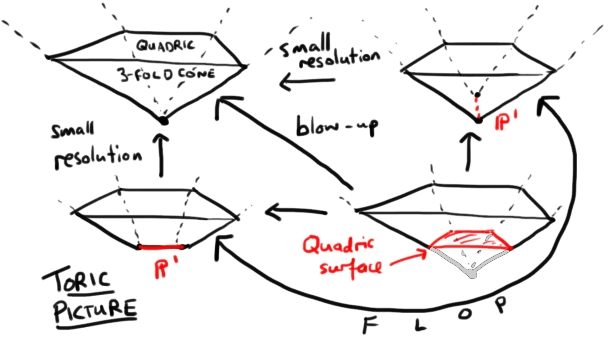

Kronheimer's argument: small resolutions and Dehn twists
Kronheimer's argument: Small resolutions and Dehn twists
I want to amplify an expository argument I gave in a recent lecture which shows that the squared Dehn twist on a symplectic 4-manifold is smoothly isotopic to the identity map. This is an old argument of Kronheimer and I only managed to sketch it hurriedly in the lecture. A few people have asked me to explain this to them in the past, so here's an explanation to which I can point people in future.
Nodal varieties
I want to start off by discussing nodal varieties. This will be a long digression and we'll get back to Dehn twists at the end.
Nodal varieties were studied by Atiyah in this short paper and in particular (Lemma 3) he proves that, in local complex coordinates near the node the variety is biholomorphic to a certain standard model, namely:
\[\{x_1^2+\cdots+x_n^2=0\}\subset\mathbf{C}^n\]
This is essentially a Morse lemma. A nodal variety is locally modelled on either \(\mathbf{C}^n\) or on a nodal analytic hypersurface. A nodal analytic hypersurface is an analytic hypersurface whose defining equation \(f=0\) has an isolated critical point where the Hessian of \(f\) is nondegenerate. You can absorb the higher terms of the power series of \(f\) into a coordinate change and make \(f\) quadratic.
The standard model is a cone: it is invariant under the diagonal \(\mathbf{C}^*\) action which rescales all coordinates. To understand the link of the cone (i.e. the space of rays, or \(\mathbf{C}^*\)-orbits), consider the \(x_i\) as projective coordinates at infinity and observe that the equation of the cone cuts out a smooth quadric at infinity. For this reason we call the model a quadric cone.
To specify holomorphic functions on a nodal variety it suffices to work locally (local functions form a sheaf) so I only need to tell you what the sheaf of holomorphic functions is on the quadric cone. It just consists of restrictions of holomorphic functions from the ambient space. We would also like to be able to talk about functions which are "not critical" at the node (or have "nonvanishing derivative" there). Since the node has no well-defined tangent space this is not obvious, but there is an obvious cone of tangent lines joining the origin to the quadric at infinity. In the case when a function is restricted to a smooth submanifold, it inherits critical points when its level set is tangent to the submanifold. Mimicking this, we define a function \(G\) on \(\mathbf{C}^n\) to be non-critical at the node if its level set \(G^{-1}(c)\) passing through 0 is smooth at 0 and if the tangent plane to \(G^{-1}(c)\) is not tangent to the quadric cone.
For example, you might consider (over the reals, for pictorial convenience) the cone \[x^2+y^2=z^2\] and the function \(G(x,y,z)=x\). Though the intersection of the level set with the cone is singular, the two are not tangent. By contrast, the function \(F(x,y,z)=x-z\) is tangent to the cone along the ray \(x=z,\ y=0\).

Figure 1: Holomorphic functions on the quadric cone which are noncritical (L) and critical (R) at the node. Holomorphic functions on the quadric cone which are noncritical (L) and critical (R) at the node.
Nodal families
Atiyah also talks about nodal families: these are nodal varieties \(V\) with a holomorphic map \[f\colon V\to R\] to a Riemann surface \(R\) (we might as well consider \(\mathbf{C}\) or the disc \(\Delta\)) such that \(f\) is noncritical at the nodes of \(V\) and such that \(f\) has nondegenerate critical points. The fibres of \(f\) (members of the family) are then nodal varieties, either inheriting their nodes ambiently from \(V\) or from the critical points of \(f\).
Atiyah's first trick
The first clever trick of Atiyah is a recipe for turning a nodal family into a new nodal family without critical points. The cost is to introduce nodes in the total space. The idea is this: \(f\) looks quadratic near its critical points (by the Morse lemma) so if you can take the square root of \(f\), maybe it will look linear. More precisely, let's do this in the local model for a quadratic function \(f(x_1,\ldots,x_n)=x_1^2+\cdots+x_n^2\). In this case the total space is \(\mathbf{C}^n\) and the Riemann surface is \(\mathbf{C}\). Take the map \(\mathrm{sq}\colon\mathbf{C}\to\mathbf{C}\) defined by \(\mathrm{sq}(z)=z^2\). Pull back the family along this map. This means we need to find, for every \((x_1,\ldots,x_n)\) a \(z\) such that \(z^2=x_1^2+\cdots+x_n^2\). So let's take as our new total space the variety \[V'=\{z^2=x_1^2+\cdots+x_n^2\}\] in \(\mathbf{C}^{n+1}\) with coordinates \((z,x_1,\ldots,x_n)\). Pulling back the holomorphic function \(f\) just becomes the projection to the \(z\) coordinate. Note that this variety is a quadric cone and the function \(z\) is noncritical at the node. So we have our new family!
If there are several critical points on our Riemann surface \(R\) then there is something global we can do: we take the double cover \(R'\) of the Riemann surface branched over these points. If the Riemann surface is closed we need an even number of branch points, so we can just add an arbitrary noncritical branch point if necessary.
By construction, the resulting varieties sit in a commutative diagram \[\begin{array}{rcl} V' & \longrightarrow & V\\ z \downarrow & & \downarrow f\\ R' & \longrightarrow & R \end{array}\]
Atiyah's second trick: the small resolution
Finally Atiyah lets us get rid of the nodes in the total space! However, this only works if the total space is 3-dimensional. The trick is a resolution of singularities which takes a nodal 3-fold and replaces each node by a \(\mathbf{CP}^1\) whose normal bundle is \(\mathcal{O}(-1)\oplus\mathcal{O}(-1)\), resulting in a smooth 3-fold. The key property of this resolution is that a holomorphic function without critical points on the nodal 3-fold (which is, in particular, noncritical at the node) lifts to a holomorphic function without critical points on the resolution.
Let's see how this works in the local model of a 3-dimensional quadric cone in \(\mathbf{C}^4\). Actually, for ease of discussion I'll change coordinates to \(x',y',z',w'\) so that \(x^2+y^2+z^2+w^2=0\) becomes \[xw=yz\] (e.g. \(x+iy\mapsto x,\ x-iy\mapsto y\), etc). We consider the following variety which I claim is a resolution of singularities of our node: \[\{(x,y,z,w,[\lambda:\mu])\in\mathbf{C}^4\times\mathbf{CP}^1\ :\ \mu x=\lambda y,\ \mu z=\lambda w\}\] This variety has a projection to \(\mathbf{C}^4\) and the image is our quadric cone \(xw=yz\). To see this, note that \[\mu xw=\lambda yw=\mu yz\] so either \(\mu=0\) or \(xw=yz\), and similarly \(\lambda=0\) or \(xw=yz\), but \(\lambda\) and \(\mu\) are projective coordinates and can't both vanish.
The preimage of \((0,0,0,0)\) under this projection is the sphere \(\mathbf{CP}^1\times\{(0,0,0,0)\}\). We call this the exceptional sphere. Away from the exceptional sphere, the projection is a biholomorphism.
What is this variety? Well, the projective quadric surface at infinity is ruled (in two different ways) by complex lines. Let's call these A- and B-lines – there is a \(\mathbf{CP}^1\) of A-lines and a \(\mathbf{CP}^1\) of B-lines. Our resolution remembers a point \(p\) on the cone and also remembers the following data: take the ray in the cone from the origin through \(p\) and look at the point \(q\) where it intersects the quadric at infinity. The resolution remembers which of the A-lines contains \(q\). If the resolution remembered the point \(q\) it would be the ordinary blow-up and instead of replacing the node by a complex line it would be replaced by a quadric surface. There is another small resolution we could take, which remembers the corresponding B-line and in coordinates this is given by \[\{(x,y,z,w,[\lambda:\mu])\in\mathbf{C}^4\times\mathbf{CP}^1\ :\ \mu x=\lambda z,\ \mu y=\lambda w\}\] We need to show that the variety is smooth and that holomorphic functions without critical points on the nodal variety lift to holomorphic functions without critical points on the small resolution.
To see that the variety is smooth, consider its projection to \(\mathbf{CP}^1\). The fibre of this projection at \([\lambda_0:\mu_0]\) is the 2-plane in 4-space given by the equations \[\mu_0x=\lambda_0y,\ \mu_0z=\lambda_0w\] hence the variety is a rank 2 vector bundle over \(\mathbf{CP}^1\), in particular it's smooth. It also clearly splits into the sum of the line subbundle with \(z=w=0\) and the line subbundle with \(x=y=0\). Each of these is just, by definition, the total space of the blow-up of \(\mathbf{C}^2\) at the origin, usually called the bundle \(\mathcal{O}(-1)\).
Finally we want to see the key property about lifting holomorphic functions without critical points. Fix a point \(L=[\lambda:\mu]\) on the exceptional sphere and look at the fibre of the projection we just defined. This is a plane. Call it \(P_L\). It's the normal plane to the exceptional sphere at \(L\) (Atiyah calls it \(Oa_{\lambda}\)). If \(G\) is a holomorphic function on \(\mathbf{C}^4\) which is noncritical at the node then its level set \(G^{-1}(c)\) passing through the node is nowhere tangent to the quadric cone, in particular, \(G^{-1}(c)\) intersects \(P_L\) transversely. This certainly means that the pullback of \(G\) to the resolution has nonzero differential at the point \(L\) (the kernel of the differential of \(G\) is the tangent space to the level set and contains \(P_L\) only if they intersect non-transversely!). Away from the exceptional sphere the resolution is a biholomorphism, so there is nothing to check. This proves the key property.
4-dimensional Dehn twists
In this lecture, I defined the Dehn twist as follows. Let \(X\) be a smooth projective variety and suppose that there is a holomorphic family \(f\colon \mathcal{X}\to\Delta\) of projective varieties over the disc with \(X=f^{-1}(1)\) whose fibres are smooth except \(f^{-1}(0)=X_0\) which has a single node. Symplectic parallel transport around the unit circle defines a symplectomorphism of \(X\); this is the Dehn twist associated to this nodal family.
To get a squared Dehn twist we need to pull back this family along the map \(\Delta\to\Delta\) which sends \(z\) to \(z^2\). Away from the origin this gives a smooth family and the boundary of \(\Delta\) wraps twice around the unit circle, thereby iterating (squaring) the monodromy. We've already seen that this introduces a node into the total space, but now our nodal family has no critical points.
Finally we take the small resolution of the node (which only works when the total space is 3-complex-dimensional, i.e. the fibre is a 4-manifold) and we get a smooth family of varieties over the disc, in other words a projection with no critical points. The small resolution is a biholomorphism away from the exceptional sphere. Therefore it has the same monodromy, a squared Dehn twist. However, a family of smooth varieties over the disc has monodromy which is smoothly isotopic to the identity: you can just contract the unit circle through smaller and smaller circles passing through 1. Each radius of circle gives a monodromy diffeomorphism (no longer necessarily symplectic because we don't have a symplectic form defined near our exceptional sphere) and these trace out a path in the diffeomorphism group of \(X\) from the 4-dimensional squared Dehn twist to the identity (the monodromy of the constant loop at 1).
This fills in the details I left unsaid in my lecture. I only ever intended to give the idea of the proof, but enough people have asked me to explain this theorem that I thought I'd do it in full.
If you felt like it was a lot of effort to read all those details and all you got was this lousy theorem about Dehn twists, you should be happy to know that small resolutions have other uses. You can use them to show that (a) resolved Kummer surfaces are diffeomorphic to quartic surfaces (see Atiyah's paper), (b) the moduli space of (non-polarised) K3 surfaces is non-Hausdorff. Moreover, (c) they crop up in an interesting transition occurring in string theory called the conifold transition which also has mathematical applications (see Smith-Thomas-Yau, Smith-Thomas, Fine-Panov 1 and Fine-Panov 2; an incomplete list which reflects my personal familiarity with the literature) and (d) they provide us with the simplest example of a flop, a class of birational transformations which play a key role in the minimal model program.
A picture
Just before signing off, I want to give you a toric picture of the small resolution. In our local model \[xw=yz\] we have three Hamiltonian circle actions \[(x,y,z,w)\mapsto (e^{i\theta}e^{i\phi}x,e^{i\phi}e^{i\psi}y,e^{-i\psi}z,e^{-i\theta}w)\] preserving the cone (there is an obvious fourth, but it's a combination of these three). These have moment maps \[|x|^2-|w|^2,\ |x|^2+|y|^2,\ |y|^2-|z|^2\] and the image of these is a square cone in \(\mathbf{R}^3\). Since the vertex has valency four, the edge vectors don't form a \mathbf{Z}-basis so the usual Delzant construction doesn't give us a smooth symplectic manifold. There are various ways to rectify this.

Figure 2: A toric picture of small resolutions for the quadric 3-fold cone.
- Blow-up. This involves truncating the cone and introducing a square face (exceptional divisor). Surprise surprise, the square is the moment image of the quadric surface and the edges are some of its rulings. All the vertices of the truncated cone are 3-valent and Delzant's construction produces the blow-up.
- Small resolutions. You could collapse the square face of truncation to one of its edges. There are two ways to do this. These are toric pictures of the two small resolutions. Again the vertices are 3-valent and Delzant gives us the small resolutions. Birational geometers call the birational map (biholomorphism between complements of the exceptional spheres) connecting these two spaces a "flop".
Don't be fooled by the fact that the local small resolutions happen to admit toric symplectic forms. They're only local and these have nothing to do with the symplectic forms in the discussion above.
References
M. Atiyah, "On Analytic Surfaces with Double Points", Proc. R. Soc. Lond. A (1958) 247(1249):237–244 (freely available in PDF form from the publisher)
For further reading, try:
P. Kronheimer, "Some non-trivial families of symplectic structures" (1998 preprint) available from his website
P. Seidel, "Lectures on 4-dimensional Dehn twists" (arXiv) in Symplectic 4-Manifolds and Algebraic Surfaces, Lectures given at the C.I.M.E. Summer School held in Cetraro (Lecture Notes in Mathematics Vol. 1938, Springer 2008)
and the lecture notes from the talk which prompted this blog post.